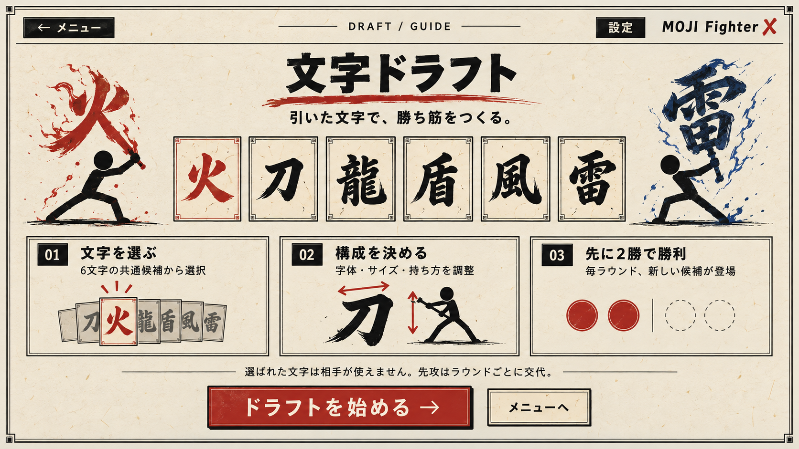
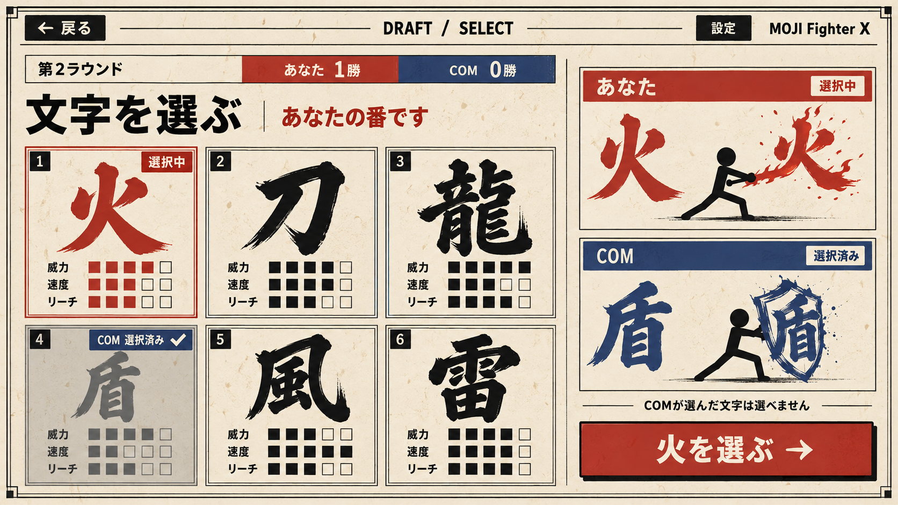
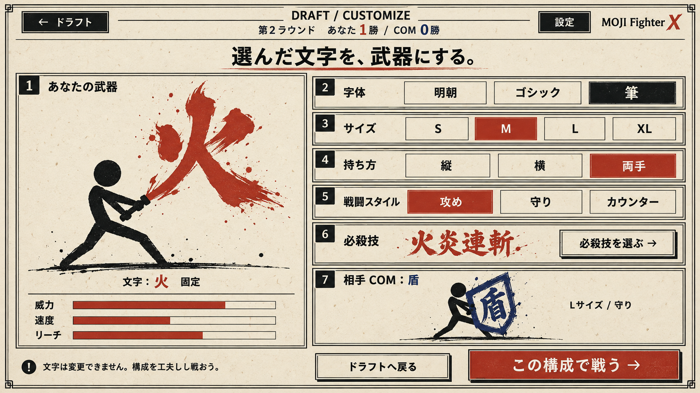
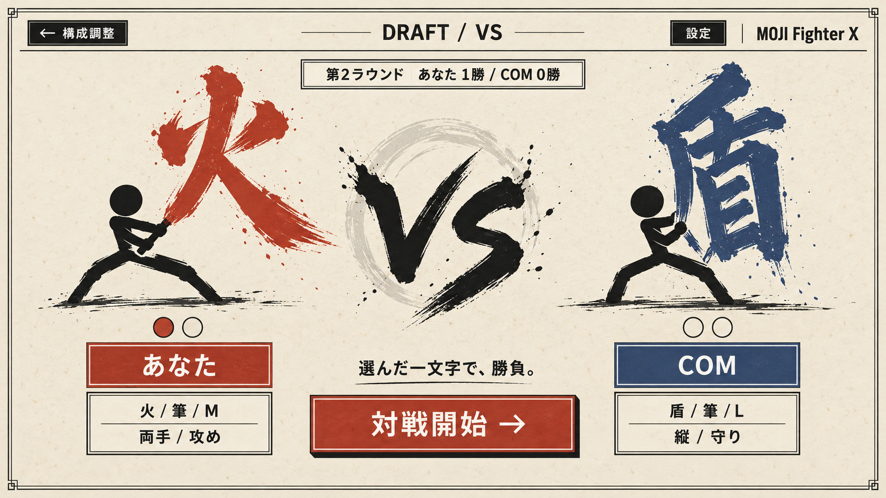
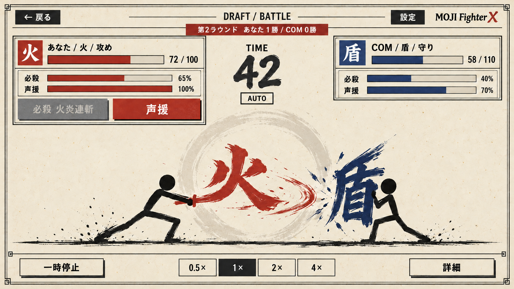
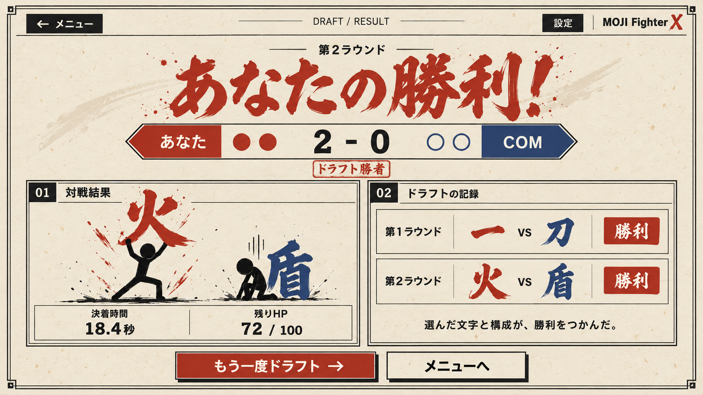

02 モード説明
共通の6候補から選ぶ、構成を調整する、先に2勝で勝利する、という遊び方を説明。

PNGを保存03 文字ドラフト
第2ラウンド。COMが先に盾を確保し、あなたは火を選択中。候補の性能メーターは表示例。

PNGを保存04 構成調整
選んだ文字は固定。字体・サイズ・持ち方・戦闘スタイル・必殺技を調整。

PNGを保存05 VS画面
あなたの火とCOMの盾を比較し、現在の勝敗数を確認して対戦開始。

PNGを保存06 バトル
既存の戦闘HUDをもとに、ラウンドと勝敗数を表示。HPやゲージは表示例。

PNGを保存07 結果画面
2勝して決着した結果の例。途中ラウンドでは、同じレイアウトの主ボタンを「次のドラフトへ」に変更。

PNGを保存